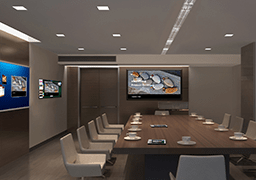

<!--
  Generated template for the MarkerHousePage page.

  See http://ionicframework.com/docs/components/#navigation for more info on
  Ionic pages and navigation.
-->
<ion-header>
  <ion-navbar>
      <ion-buttons start>
          <button ion-button icon-only (click)="dismiss()">取消</button>
        </ion-buttons>
    <ion-title>marker-house</ion-title>
  </ion-navbar>

</ion-header>


<ion-content padding>
  <ion-list>
      <ion-item *ngFor="let item of houseInfoList">
        <ion-thumbnail item-start>
          
        </ion-thumbnail>
        <h1>{{item.name}}</h1>
        <p>
          <span>{{item.city}}</span>
          <span>{{item.type}}</span>
          <span>{{item.area}}</span>
        </p>
        <p>{{item.sub}}</p>
        <p><span>{{item.price}}</span></p>
      </ion-item>
      <!-- <ion-item *ngFor="let item of list">
          <ion-thumbnail item-start>
            
          </ion-thumbnail>
          <h1>{{item.}}</h1>
          <p>{{item.}}</p>
        </ion-item> -->
  </ion-list>
 
</ion-content>
